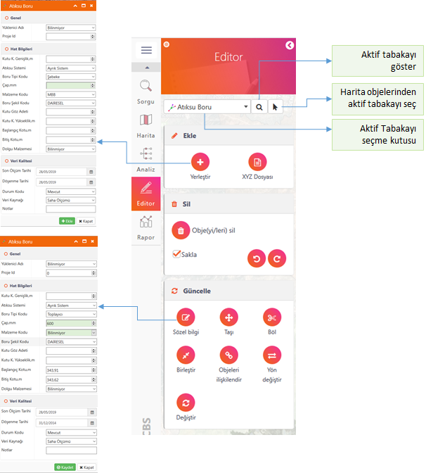

ODAGIS+™ Web arayüzünde Editör panelinde coğrafi bilgi üretimi ve güncelleme çalışmalarında kullanıcı dostu standart bir arayüz sunmaktadır. Bu arayüzde mevcut coğrafi tabakaların seçilmesi, bu tabakalarda veri girişi ve güncelleme işlemleri oldukça pratik ve hızlı bir şekilde yapılabilmektedir. Ayrıca gelişmiş bazı editör araçları da bu arayüzde sunulmaktadır. Editör arayüzünde veri girişi ve güncelleme işlemleri, yıllarca tecrübe edilmiş, kolay/basit kullanımlı, patentli "Ekle", "Düzenle", "Sil" bölümlerindeki standartlaştırılmış komutlar ile yapılmaktadır. Böylelikle her türlü veri girişi ve güncelleme işlemi çok hızlı ve pratik şekilde yapılabilmektedir.
Editör arayüzü oldukça sade ve standart olmasına karşın arka planla oldukça güçlü ve organize bir altyapısı bulunmaktadır. Yapılan her bir ekleme, düzenleme ve silme işlemi kullanıcı bazında kayıt altına alınmakta, istenildiğinde obje bazında bu ekleme ve değişiklikler görüntülenebilmektedir. Sözel bilgi değişikliklerinin yanısıra geometri değişiklikleri de obje bazında izlenebilmektedir.
